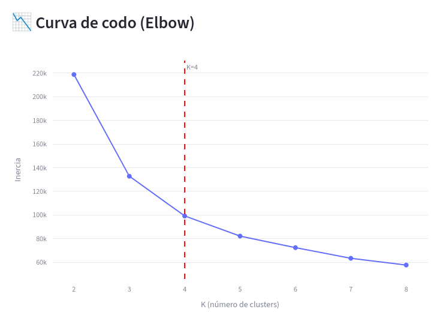
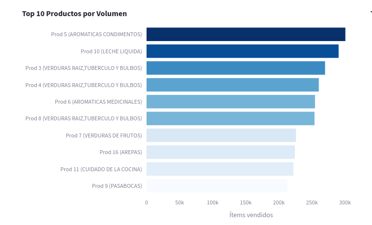
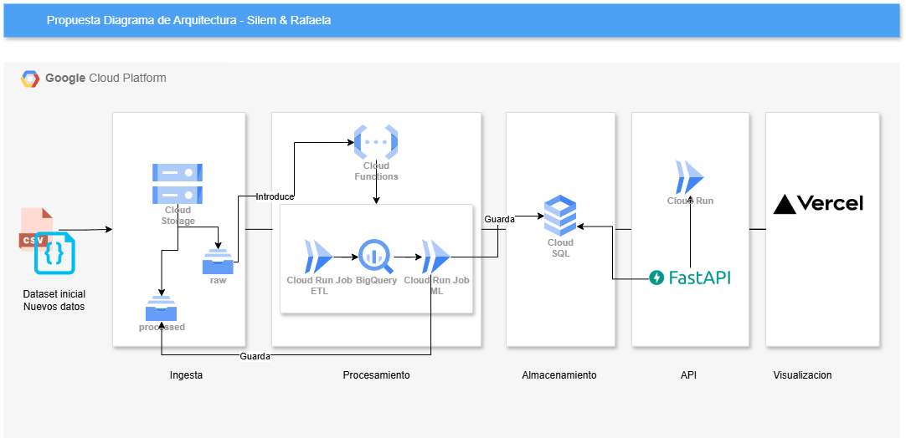

1.108.951transacciones
10,6 Mítems vendidos
131.186clientes únicos
449productos · 39 categorías
| Tienda | Ítems | Participación | Clientes |
|---|---|---|---|
| 103 | 4.234.384 | 40,0 % | 52.728 |
| 102 | 2.562.322 | 24,2 % | 33.147 |
| 107 | 2.410.961 | 22,8 % | 30.942 |
| 110 | 1.384.088 | 13,1 % | 14.369 |
Hallazgo: el negocio está anclado en productos frescos; las reglas de asociación entre ellos superan un lift de 16×, útil para el diseño de la tienda y las promociones cruzadas.
50,6 %Ocasionales
66.396 clientes · 2,2 visitas
66.396 clientes · 2,2 visitas
29,2 %Regulares
38.360 · 7,9 visitas
38.360 · 7,9 visitas
15,8 %Frecuentes
20.664 · 19,7 visitas
20.664 · 19,7 visitas
4,4 %VIP
5.766 · 42,7 visitas
5.766 · 42,7 visitas
K-Means con K = 4, elegido por la curva del codo (inercia 99.163).



ETL en Python y Pandas → Parquet en Cloud Storage → API en FastAPI y tablero en Streamlit, empaquetados en Docker y desplegados en Google Cloud Run.